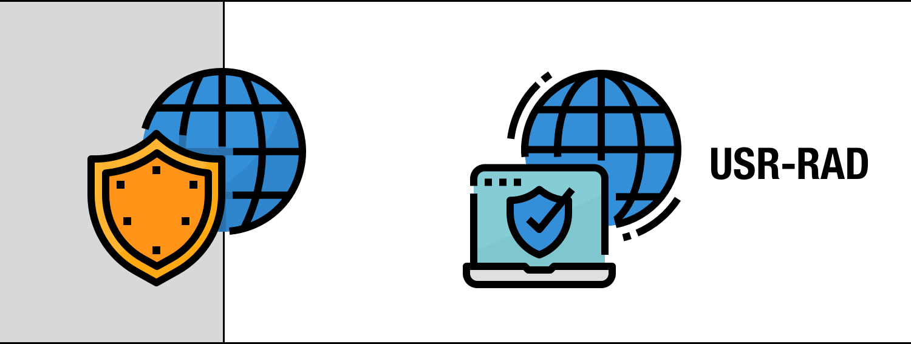

3. Pruebas de AAA vía VPN
1. Configuración del cliente del usuario Windows 10 Enterprise
Para probar la infraestructura que se ha instalado y configurado en los anteriores capítulos, se incorpora un cliente windows 10 que será el que utiliza el usuario.

Figura 1. Esquema de instalación.
Independientemente de la configuración del equipo, y casi del sistema operativo, podremos conectarnos con una conexión VPN a la red empresarial creada en este escenarios. Nos va a permitir realizar las tareas como si estuviéramos en la propia empresa.
Hacemos clic en el menú de Inicio, Configuración, Red e Internet y en la parte izquierda en VPN.
Figura 2. VPN en Windows 10.
A continuación, Pulsamos el botón de +Agregar una conexión VPN. A continuación, hay que rellenar lo siguiente:
- Como proveedor de VPN, selecionamos Windows (integrado). Es posible instalar otros proveedores, como Fortinet, que te permiten utilizar sus servicios pero desde la interfaz integrada de Windows.
- Nombre de conexión, trabajo u otro que te resulte reconocible.
- Nombre de servidor o dirección IP. Suele tratarse de un dominio de internet o una IP externa de router. En nuestro caso el cliente RADIUS actua como tal, por eso rellenamos su IP (172.10.0.4) de la red NAT, que actúa como externa.
- Tipo de VPN, hace referencia al sistema de conexión y seguridad, seleccionamos PPTP. Aunque de las que aparecen, L2TP/IPsec con certificado seguramente sea la más segura, no forma parte de nuestro escenario.
- Windows Server 2019 incluye la posibilidad de configurar varios tipos de cifrado para VPN:
- PPTP (Point to Point Tunnelling Protocol). Puerto TCP 1723.
- SSTP (Secure Socket Tunnelling Protocol). Puerto TCP 443.
- IKEv2 (Internet Key Exchange v2) Usa UDP con el puerto 500.
- L2TP (Layer 2 Tunneling Protocol) Puertos UDP 1701 y 4500. Además ID de Protocolo IP 50.
- Según el tipo de cifrado deberíamos asegurarnos de la apertura de sus puertos en el cortafuegos y realizar ajustes para ponerlo en marcha.
- En nombre de usuario y contraseña, cumplimentaremos el nuestro. Que debe estar entre los permitidos para acceder en NPS de nuestro servidor RADIUS.
Figura 3. Configuración VPN en Windows 10.
Pulsamos el botón Guardar para finalizar.
Figura 4. VPN Teletrabajo creada.
Pulsamos en 'Conectar' para que comience el proceso de autenticación.
Figura 5. Proceso de conexión del equipo cliente al Cliente Radius.
Ya tenemos nuestra conexión creada y solo deberemos pulsar en conectar para poder sacarle partido.
Como podemos observar en la Figura 6, desde la bandeja del sistema el equipo está conectado a la red Teletrabajo. Cuando se necesite realizar la conexión en futuras ocasiones, este es el lugar más directo donde iniciar la conexión remota.
Figura 6. Bandeja del sistema Windows 10.
Ahora, desde el equipo cliente donde se ha autenticado el usuario del dominio, podemos comprobar que la conexión se ha realizado correctamente, para ello, utilizamos el comando arp.
De manera más técnica, podemos usar el comando arp para ver las tablas arp de los equipos del sistema AAA:
|
Tabla arp del servidor Radius/NAS, donde:
|
|
|
Tabla arp del cliente Radius/NAS (diferentes interfaces de red), donde:
|
|
|
Tabla arp del equipo cliente Windows 10, donde:
|
Si lo miramos desde el punto de vista del servidor, podemos observar en la herramienta Enrutamiento y Acceso remoto, en el nodo del árbol 'Puertos'.
Figura 8. Puerto activo para la conexión del cliente Windows 10.
Si accedemos al nodo del árbol 'Clientes de acceso remoto' en el árbol, podemos observar que ya se tiene listo el sistema de conexión remota, en concreto, se puede ver el usuario radiustest que está autenticado en el sistema.
Figura 9. Cliente autenticado en el servidor Radius.
El servidor RADIUS también recopila una variedad de información enviada por el NAS que se puede usar para la contabilidad y para informar sobre la actividad de red (Accounting). El cliente RADIUS envía información a los servidores RADIUS designados cuando el usuario inicia sesión y cierra sesión. El cliente RADIUS puede enviar información de uso adicional periódicamente mientras la sesión está en curso. Las solicitudes enviadas por el cliente al servidor para registrar la información de inicio y cierre de sesión y uso se denominan generalmente "solicitudes de contabilidad". Fuente.
Para obtener más información sobre la contabilidad RADIUS, acceder a RFC 2866.
Para obtener la información de 'Accounting', hacemos click con el botón derecho del ratón sobre El cliente de acceso remoto y seleccionamos la opción 'Estado'
Figura 10. Accounting del cliente Radius.
2. Creación de conexión en Windows 10 utilizando PowerShell
También es posible crear la conexión del cliente usando PowerShell. el comando a ejecutar, es el siguiente:
PS C:\>Add-VpnConnection -Name “Teletrabajo” -ServerAddress “172.10.0.4” -TunnelType PPTP -AuthenticationMethod MSChapv2 -RememberCredential
donde,
- -ServerAddress 172.10.0.4: Es la ip externa del NAS o cliente Radius.
- MSChapv2: Es el protocolo de autenticación basado en contraseña. Es un método de autenticación en VPN basadas en PPTP (Protocolo de túnel punto a punto). Fuente.
Para más información sobre el cliente VPN en PowerShell.
Obra publicada con Licencia Creative Commons Reconocimiento No comercial Compartir igual 4.0